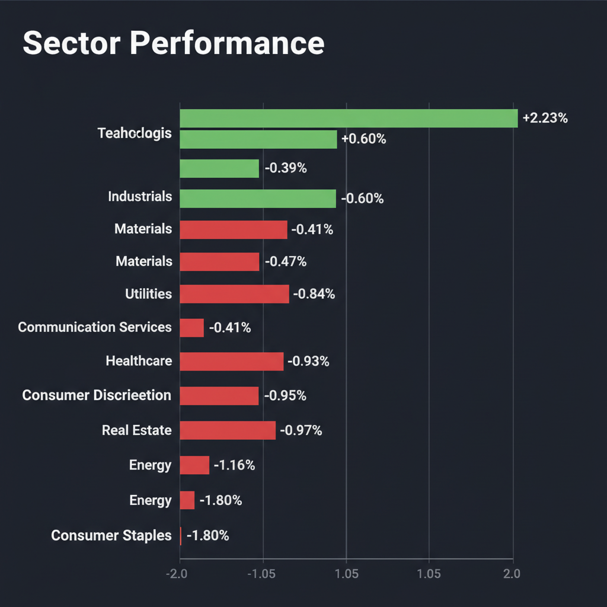
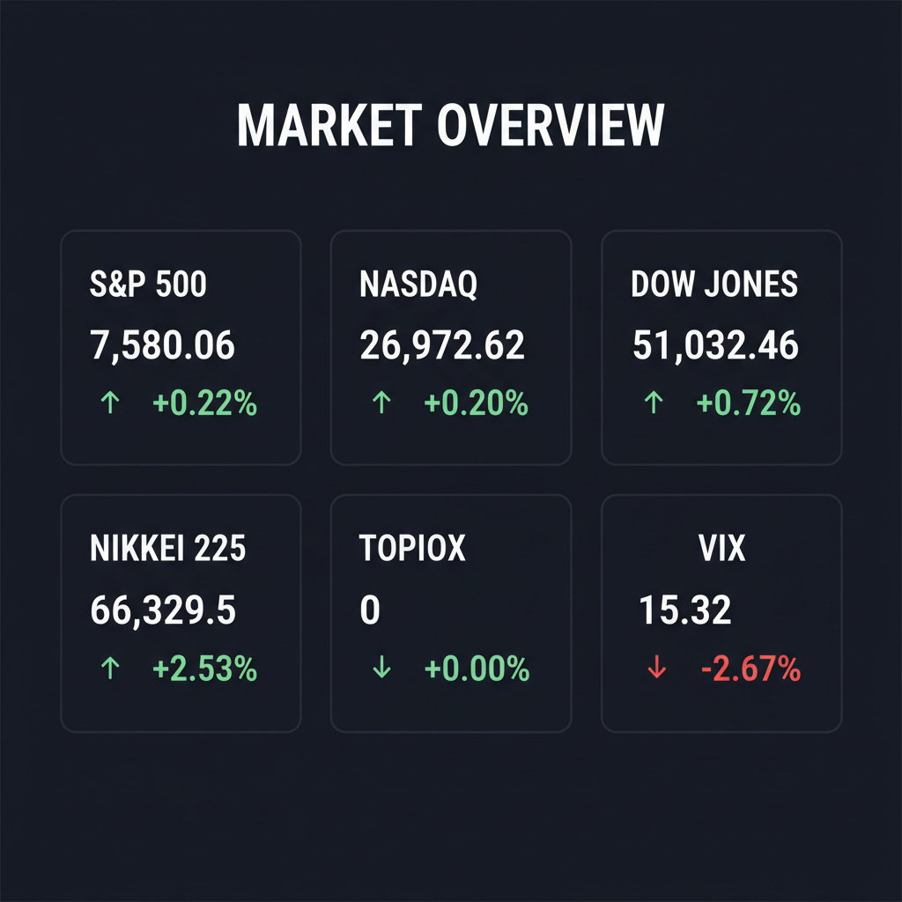

投資チームミーティングの議論および最新のWeb調査結果を統合した、投資家向けの最終レポートをお届けします。
各エージェントがWeb調査結果を踏まえて独立に10段階評価した結果です。平均7以上=強気、4〜6.9=中立、4未満=弱気。
| 銘柄 | ファンダメンタルズアナリスト | テンバガーハンター | マクロエコノミスト | テクニカルストラテジスト | リスクマネージャー | 平均 | 判定 |
| NXT | 9 AI電力インフラ化加速、財務健全、目標株価上昇 | 9 AI電力インフラ化完了、成長ストーリー鉄壁 | 8 AI電力インフラ化完了、目標株価大幅引き上げ | 9 AI電力インフラ化完了、決算上方修正、目標株価UP | 8 AI電力需要と実質無借金で成長加速 |
8.6 | 強気 |
| 7711 | 8 最高益更新、増配、国策テーマ、割安 | 8 最高益更新、国策テーマで安全なバリュー | 7 最高益・増配、国策テーマとバリュー魅力 | 7 最高益・増配、国策テーマ、ボラ高警戒 | 7 最高益予想上方修正、安全なバリュー株 |
7.4 | 強気 |
| 3778 | 3 営業赤字転落、高PER、期待剥落リスク大 | 3 赤字転落、高PERで安全マージン皆無 | 3 営業赤字転落、高PERで安全マージン欠如 | 3 営業赤字転落、財務レバレッジ上昇、割高感 | 3 営業赤字転落、投資過熱で警戒 |
3 | 弱気 |
| NNE | 2 赤字継続、SEC調査、ガバナンスリスク大 | 1 SEC召喚状、収益ゼロで法的リスク高 | 1 SEC召喚状受領、ガバナンスリスク急浮上 | 1 SEC召喚状受領、収益ゼロ、法的リスク極大 | 1 SEC召喚状で法的リスク急浮上 |
1.2 | 弱気 |
エージェントが推奨した中小型株について、Google検索で最新情報を調査した結果です。
NXTの銘柄情報について調査した結果、主にNASDAQ上場のNextpower Inc.（旧Nextracker Inc.）に関する情報が豊富に得られました。ここでは、太陽光エネルギー技術企業であるNextpower Inc.について、ご指定の観点で簡潔にまとめます。
銘柄: Nextpower Inc. (NASDAQ: NXT)
1. 企業概要（事業内容、時価総額、業界でのポジション） Nextpower Inc.は、太陽光発電所向けに先進的なエネルギー技術プラットフォームを提供する、米国を拠点とする製造・エネルギー技術企業です。主な事業内容は、太陽光パネルが太陽の動きを追尾し発電量を最適化するソーラートラッカー製品の設計、エンジニアリング、提供です。これには、電気バランスオブシステム（eBOS）ソリューションや、イールドマネジメント・制御システムなども含まれます。ユーティリティ規模および分散型発電の太陽光プロジェクトに対応しており、そのシステムは世界40カ国以上で稼働または導入され、創業以来150ギガワット以上のトラッカーシステムを出荷しています。2026年初頭時点では、AIデータセンター、電気自動車（EV）充電インフラ、グリッド規模のエネルギー貯蔵システム（BESS）にも注力しています。
時価総額は、2026年5月29日時点で約235億ドルです。業界においては、ソーラートラッカー製品の世界最大手としての地位を確立しています。
2. 直近の業績・決算情報（売上、利益、成長率） Nextpower Inc.は、2026年5月12日にFY2026年第4四半期および通期決算を発表しました。 * FY2026年第4四半期（2026年3月31日終了）： * 調整後希薄化EPSは1.05ドルとなり、アナリスト予想の0.9279ドルを上回りました。 * 売上高は8億8,100万ドルで、アナリスト予想の8億2,700万ドルを超過しました。 * FY2026年通期（2026年3月31日終了）： * 年間売上高は過去最高の35億6,000万ドルを記録し、前年比20%増となりました。 * 純利益は5億8,588万ドルです。 * 売上総利益は10億900万ドルで、前年比24.08%の増加です。 財務状況としては、四半期末時点で約11億ドルの現金および現金同等物を保有し、有利子負債はゼロという良好な状態です。また、FY2027の売上高ガイダンスを38億ドルから41億ドルのレンジに引き上げています。
3. 最新ニュース・材料（直近1-2週間の重要なニュース） * 2026年5月29日、JPモルガンがNextpowerの目標株価を155ドルから174ドルに引き上げました。 * 2026年5月28日には、UBSが目標株価を140ドルから170ドルに、ジェフリーズが145ドルから155ドルにそれぞれ引き上げたと報じられました。 * 同日、Prevalon Energy買収に関する最終契約を発表し、バッテリーエネルギー貯蔵（BESS）およびAIデータセンター市場への参入を明らかにするとともに、FY2027の見通しを引き上げました。 * 2026年5月13日、FY2026年第4四半期決算が市場予想を大幅に上回り、今後の業績見通しを引き上げたことで、株価が急騰しました。同時に、約8,050万ドルの現金対価による買収取引と、成長施策のための追加投資5,000万ドルの計画を発表しました。
4. アナリスト評価・目標株価（あれば） アナリストによるNextpower Inc.のコンセンサス評価は、一般的に「強気買い」または「買い」です。 平均目標株価は情報源によって異なりますが、以下のような予想が出ています。 * みんかぶ米国株（2026年5月27日時点）：142.92ドル（現在の株価から8.92%上昇の可能性） * TradingView：140.91ドル（最高177.00ドル、最低112.00ドル） * Benzinga（2026年5月28日時点）：131.89ドル（最高182.00ドル、最低45.00ドル） 直近では、JPモルガンが174ドル、UBSが170ドル、ジェフリーズが155ドル、シティが145ドル、サスケハナが161ドル、ベアードが156ドルと目標株価を引き上げています。
5. リスク要因（競合、規制、財務上の懸念） * 競合: 太陽光エネルギー技術市場は競争が激しく、常に技術革新とコスト競争に直面しています。 * 規制: 各国の再生可能エネルギー政策や補助金動向の変化が、事業に影響を与える可能性があります。 * 財務上の懸念: 直近の決算では有利子負債ゼロと健全な財務状況ですが、みんかぶリサーチによる株価診断ではPSR（株価売上高倍率）やEV/EBITDA倍率で「割高」と判断されており、PBR（株価純資産倍率）を中心としたバリュエーションの悪化に注視が必要とされています。
6. 株価の最近の動き（直近のトレンド） Nextpower Inc.の株価は、直近で好調に推移しています。2026年5月29日の取引では14.02%上昇し、156.40ドルを付けました。過去5日間連続で上昇しており、過去2週間で9.56%の上昇を記録しています。過去1年間では148%または180.74%と大きく上昇し、直近の好決算と業績見通し引き上げにより52週高値を更新しました。テクニカル分析では、短期的な上昇トレンドがさらに強まる可能性が示唆されています。2026年5月29日時点の52週高値は163.13ドル、52週安値は51.69ドルです。
さくらインターネット（証券コード: 3778）に関する最新情報は以下の通りです。
1. 企業概要（事業内容、時価総額、業界でのポジション） さくらインターネットは、データセンター運営を基盤とし、ホスティング・クラウドサービス、VPS（仮想専用サーバー）、IoTプラットフォームなどを提供する情報・通信業の企業です。特に、生成AI開発向けのGPUインフラストラクチャーサービス「高火力コンピューティング」に注力しており、国内では政府主導の「ガバメントクラウド」認定を受けた唯一の事業者としての地位を確立しています。2026年5月29日時点の時価総額は約1,267億円です。
2. 直近の業績・決算情報（売上、利益、成長率） 2026年3月期の連結決算は、売上高が353億164万円（前年比+12.4％）と増収でしたが、営業利益は4億365万円の赤字（前年は41.4億円の黒字）に転落しました。経常利益は1億547万円（前年比△97.4％）、純利益は2億1,602万円（前年比△92.6％）でした。この赤字転落は、主にGPU関連投資の減価償却費、サーバー保守費用、データセンター賃料、人材投資といった先行投資の増加が要因です。
一方、2027年3月期の連結業績予想では、売上高450億円（前年比+27.5％）、営業利益15億円（黒字転換）、経常利益12億円（前年比+1,038.0％）、純利益8億5,000万円（前年比+293.5％）と、大幅な回復を見込んでいます。GPUインフラストラクチャーサービスとクラウドサービスの伸長が売上成長を牽引し、投資フェーズから回収フェーズへの転換が期待されています。
3. 最新ニュース・材料（直近1-2週間の重要なニュース） 直近の主なニュースとしては、2026年5月31日に「2026年定時株主総会その他の電子提供措置事項（交付書面省略事項）」の適時開示がありました。また、2026年5月25日には株価が前日比+11.05%の3,235円に上昇する動きを見せています。2026年4月27日には2026年3月期の決算が発表され、営業損益の赤字転落と2027年3月期の黒字回復見通しが示されました。同日、日系大手証券が同社のレーティングを「中立」に据え置いたものの、目標株価を3,302円から3,093円に引き下げたとの報道もあります。
4. アナリスト評価・目標株価 2026年5月31日時点のアナリストコンセンサスでは、さくらインターネットに対して「買い」または「強気」の評価が示されています。内訳は強気買い1人、中立1人です。アナリストの平均目標株価は4,352円で、現状の株価から約43.83%の上昇余地があると予想されています。ただし、一部の大手証券は2026年4月27日に目標株価を3,093円に引き下げ、レーティングは中立を維持しています。
5. リスク要因（競合、規制、財務上の懸念） 主なリスク要因として、大規模なGPU関連投資に伴う減価償却費や運営費用、人材投資の増加が先行し、売上拡大のタイミングによっては採算性に影響を与える可能性があります。設備投資の拡大により手元資金が減少し、財務レバレッジが上昇している点も財務上の懸念として挙げられます。
また、AI関連技術の進化は非常に速く、最新鋭の設備が短期間で陳腐化する技術的リスクや、GPUの更新サイクルが早いことによる継続的な設備投資負担が存在します。外資系メガクラウド企業との競争激化も長期的な不確実性として議論されています。さらに、マイクロソフトとの協業の具体策が遅れる場合や、NVIDIAの最新GPU「B200」案件の収益化が計画通りに進まない場合、市場の期待が剥落し株価が大きく変動するリスクも指摘されています。
6. 株価の最近の動き（直近のトレンド） さくらインターネットの株価は、AIブームの中で激しい値動きを見せ、高いボラティリティ（価格変動幅）が特徴です。2026年4月初旬にはわずか数営業日で53.4%急騰した実績もあります。
直近では、2026年4月22日に年初来高値4,025.0円を記録しましたが、2026年4月3日には年初来安値2,448.0円まで下落しています。2026年5月29日の終値は3,025.0円で、直近1ヶ月の騰落率は-18.4%（2026年5月25日時点）となっています。20日前比では-8.19%（2026年5月19日時点）と下落傾向にありますが、5日前比では+3.84%（2026年5月19日時点）とやや回復の兆しを見せています。
NNE（Nano Nuclear Energy Inc.）に関する投資判断に必要な最新情報を以下に簡潔にまとめます。
1. 企業概要 * 事業内容: Nano Nuclear Energy Inc.は、クリーンエネルギーソリューションの開発に注力する先進原子力エネルギー技術企業です。主要な事業ラインとして、携帯型および定置型のマイクロリアクター（KRONOS MMR、LOKI MMR、ZEUS、ODIN）、核燃料加工、核燃料輸送、原子力コンサルティングサービスを展開しています。同社は、米国で初めて上場した核マイクロリアクター企業であると認識されています。本社はニューヨークにあり、2022年に設立され、2024年5月7日に上場しました。 * 時価総額: 2026年5月26日時点で約15.00億ドルです。 * 業界でのポジション: 米国のマイクロ原子炉開発企業の先発組3社のうちの1社とされています。同社のKRONOS MMRは、米国原子力規制委員会（NRC）の正式なライセンスプロセスにおいて、建設許可申請が受理された初の商業利用可能なマイクロリアクターであると報じられています。
2. 直近の業績・決算情報 同社は現在、収益を上げていない事業開発段階にあります。 * FY2026 第2四半期（2026年1月〜3月期）: 純損失は920万ドルで、人員増加とプロジェクト費用が主な要因でした（第1四半期の620万ドルから増加）。 * 1株当たり利益（EPS）: 直近12か月で-0.69ドルです。直近の四半期決算では、1株当たり利益は-0.18ドルと、予想の-0.26ドルを上回りました。売上高は予想通り0.00ドルでした。
3. 最新ニュース・材料（直近1-2週間） * 2026年5月26日：核物流・輸送会社との提携に関するニュースがありました。 * 2026年5月22日：AIインフラ分野への参入を視野に入れ、スーパー・マイクロ・コンピューター（SMCI）との協業が報じられました。 * 2026年5月20日：米国原子力規制委員会（NRC）が、同社のKRONOS MMR（小型モジュール炉）の設置に向けた建設許可申請を正式に受理したと発表しました。これにより、イリノイ大学アーバナ・シャンペーン校への配備計画に向けた正式審査が開始されます。 * 2026年5月20日：KRONOS MMRとイリノイ大学アーバナ・シャンペーン校が規制上の次の節目に進展しました。 * 2026年5月20日：マイクロリアクター実現への高コストな道筋が概説されました。 * 2026年5月13日：2026会計年度第2四半期の決算が発表されました。
4. アナリスト評価・目標株価 * アナリストコンセンサス: 「強い買い」と評価されています。 * 平均目標株価: 46.67ドルで、現在の株価から約61.59%から72%の上昇余地があると予測されています。 * 個別評価: Benchmarkは「買い」で目標株価45.00ドル（2026年5月26日時点）、Texas Capital Securitiesは「買い」で目標株価43.00ドル（2026年5月25日時点）としています。
5. リスク要因 * 競合: 原子力エネルギー市場には既存企業と新規スタートアップが多数存在し、競争は激しいです。 * 規制: 原子力規制委員会（NRC）からの承認取得は長期にわたる複雑なプロセスであり、遅延や問題発生のリスクがあります。高濃縮低濃縮ウラン（HALEU）の燃料輸送や規制も重要な課題です。 * 財務上の懸念: 現在は収益が無く、事業の継続は継続的な資金調達に依存しています。EBITDAはマイナス4,500万ドルと赤字が続いています。ただし、負債を上回る現金を保有し、5億6900万ドルの現金および短期投資、および手付かずの4億ドルのATMファシリティにより強固な流動性を維持しているとされています。 * その他のリスク: 2026年1月16日にSECから召喚状を受領したことが新たなリスクとして開示されています。また、原子力エネルギーに対する公衆の認識や技術開発における遅延のリスクも挙げられます。
6. 株価の最近の動き Nano Nuclear Energy Inc.は2024年5月7日に上場しました。株価は個別のニュースや事業進捗に反応して変動しています。例えば、KRONOSマイクロリアクターの建設許可申請がNRCに受理されたとのニュースを受け、2026年5月20日のプレマーケット取引では株価が4.2%上昇しました。一方で、過去には建設許可申請のマイルストーン後に7.0%下落した時期や、1週間で14%以上下落した時期も報告されています。2026年5月29日時点の現在値は28.88ドルです。
助川電気工業（7711）に関する投資判断に必要な最新情報は以下の通りです。
1. 企業概要 助川電気工業は、「熱」と「計測」のエンジニアリング会社です。原子力・火力発電所や半導体・液晶製造装置で使われる温度制御装置（センサー/熱電対、ヒーター）、安全性確証試験装置、原子力関連機器、電磁ポンプの研究開発・供給を行っています。主要製品は安全性確証試験装置、産業システム（シース型熱電対、ヒーター）、電磁ポンプなどです。溶融金属関連システムや核融合関連部門の実験装置なども手掛け、原子力産業に貢献しています。次世代素粒子関連では、ニュートリノ振動の検証用「電磁ホーン」をスーパーカミオカンデに納入した実績もあります。同社は高精度な温度制御と計測技術、設置・保守の一貫サービスを差別化要因としています。 2026年5月29日時点の時価総額は約315億円です。 業界でのポジションとしては、熱制御技術に強みを持つ温度測定・加熱製品メーカーであり、原子力分野から一般産業向けにも事業を展開しています。
2. 直近の業績・決算情報 2026年5月7日に発表された2026年9月期第2四半期累計（2025年10月～2026年3月）の非連結経常利益は7.9億円で、前年同期比12.2%増となりました。売上高は前年同期比5.0%増の31.08億円、営業利益は12.0%増の7.84億円、純利益は13.3%増の5.61億円と、増収増益を達成しています。 これに伴い、通期の経常利益予想を従来の11.9億円から12.9億円へ8.4%上方修正し、増益率が9.6%拡大するとともに、3期連続での過去最高益予想をさらに上乗せしました。年間配当も従来の50円から52円に増額修正しています。 直近3ヵ月の実績である1-3月期（2Q）の経常利益は前年同期比14.9％増の4.7億円に伸び、売上営業利益率は前年同期の25.4％から28.8％に上昇しました。
3. 最新ニュース・材料 直近の重要なニュースとして、2026年5月7日に2026年9月期中間決算を発表し、通期の業績予想及び配当予想を上方修正したことが挙げられます。 これを受けて、5月7日には株価が急伸しました。 その他、2026年5月8日には「前日に動いた銘柄 part1」として、助川電気工業が取り上げられています。
4. アナリスト評価・目標株価 主要な証券アナリストによるコンセンサス予想や目標株価は明確には示されていません。 ただし、「みんかぶ」ではAIによる予想株価が2,806円で「売り」と評価されていますが、これはプロの証券アナリストの評価とは異なります。 株予報Proでは、PBR基準の理論株価が割安とされていますが、特定の目標株価は示されていません。
5. リスク要因 主なリスク要因としては、原子力分野への依存度が高い点が挙げられます。原子力産業分野の売上が全体の相当部分を占めるため、需要減少時には業績に影響を受ける可能性があります。政策動向や案件進捗により販売量が変動しやすい点が論点です。 また、差別化製品の提案力が弱まると、受注拡大に影響する可能性があります。
6. 株価の最近の動き 2026年5月22日から5月29日の終値は5,360円から5,380円と横ばい圏で推移しています。しかし、5月26日には終値が前日比9.04%上昇し5,910円となった後、5月27日には7.28%下落するなど、値幅が拡大する動きが見られました。出来高も5月26日には前日比115%に急増しており、短期資金の流入により上下に振れやすい局面にあると分析されています。 52週の高値は12,250.0円、安値は2,040.0円です。